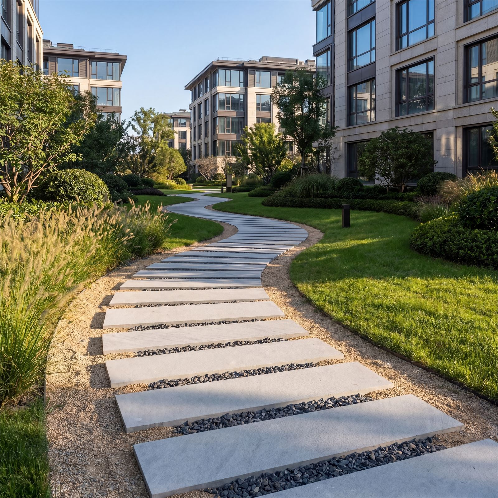
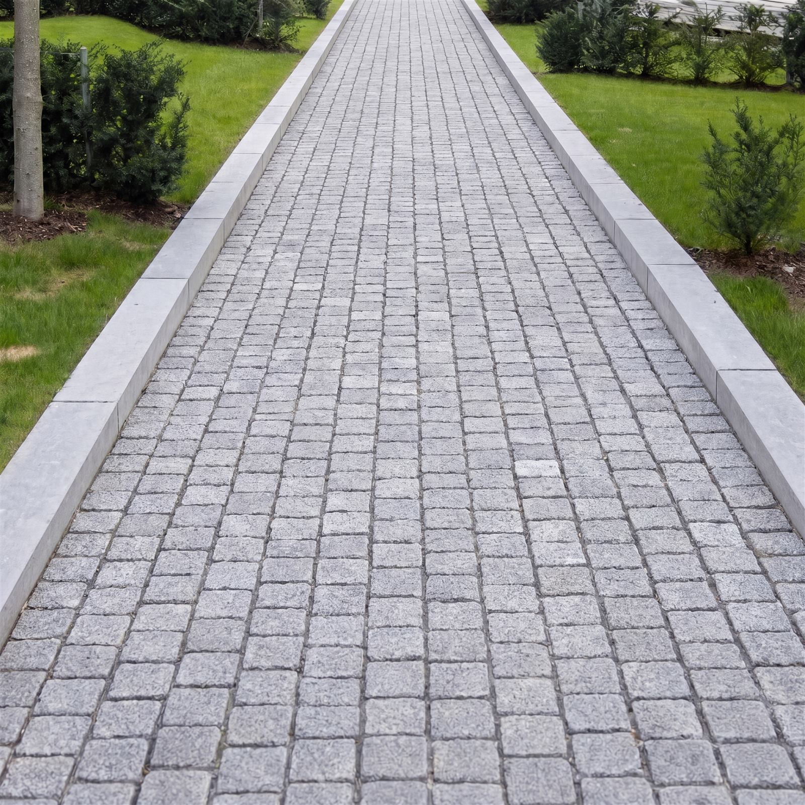
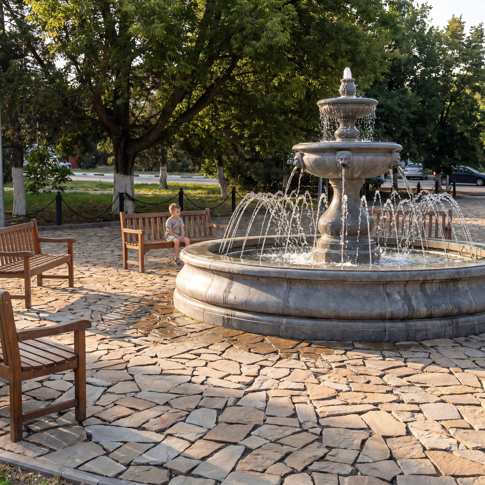
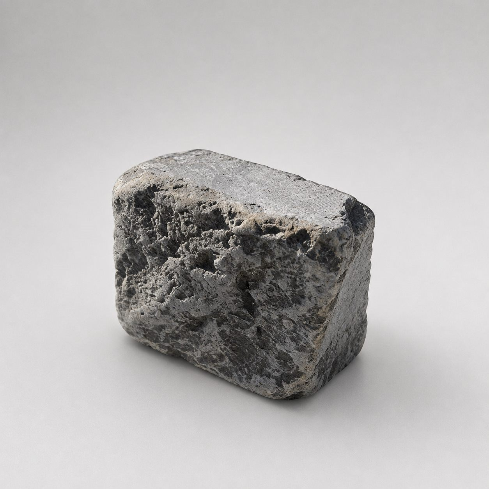
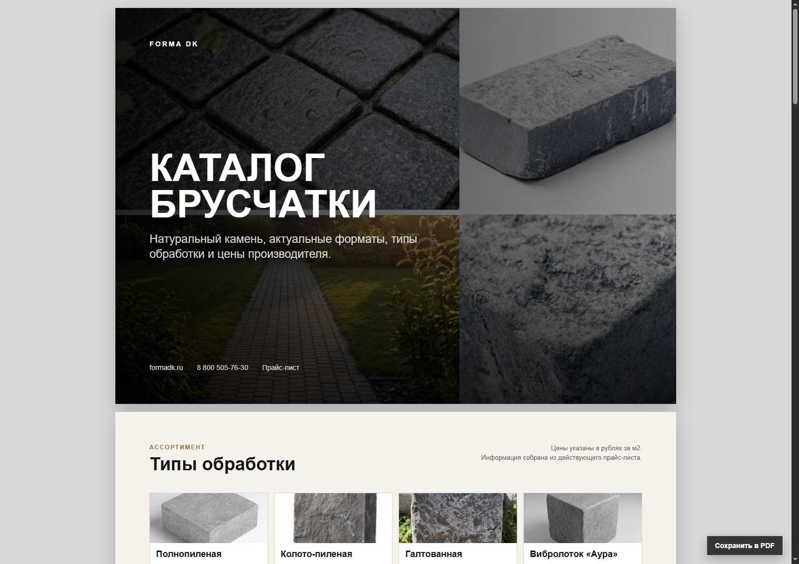
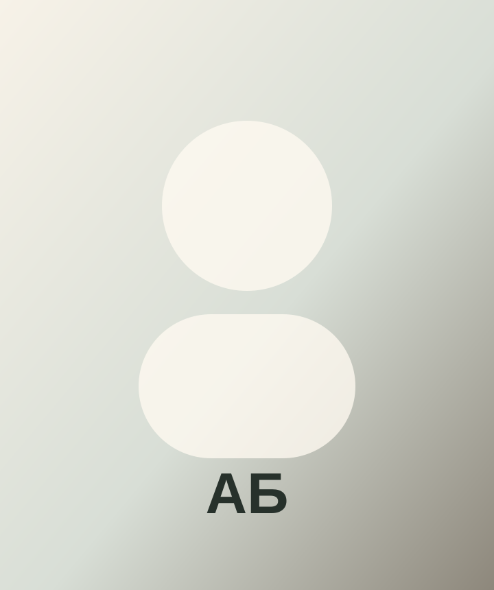
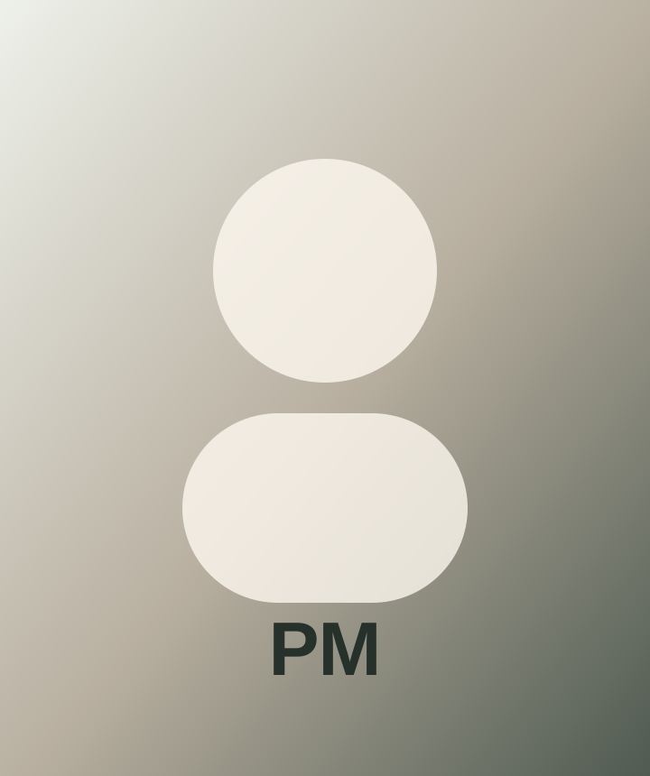
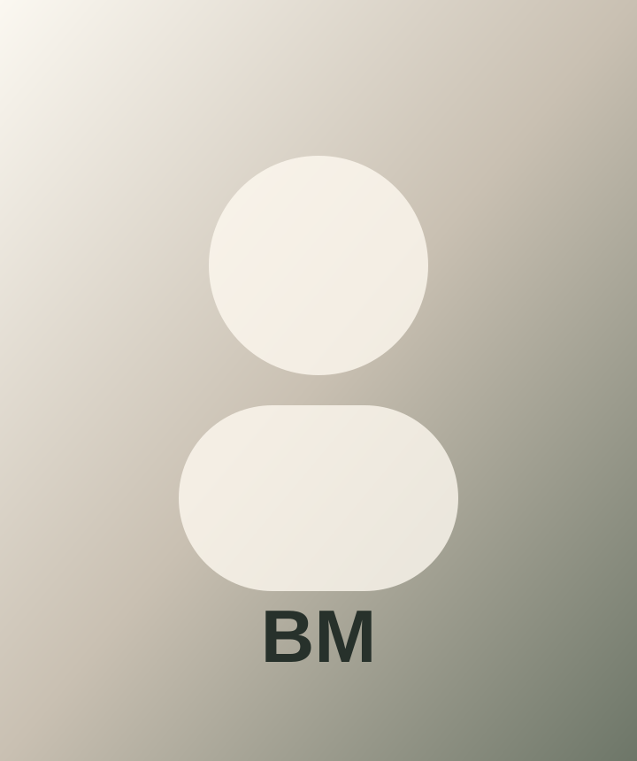

Прямые поставки без лишних посредников — проще держать маржу и конкурировать.

Для дилеров, строителей и ландшафтных бюро
Натуральный камень напрямую от производителя
Поставляем тротуарную и облицовочную плитку из собственных карьеров для дилеров, строителей и ландшафтных бюро. Стабильные партии, понятные сроки и конкурентная цена.
В поставке
Собственные карьеры
Оптовые партии
Доставка по РФ
Повторяемая фактура, понятные сроки и поставки под регулярные заказы.
Натуральный камень выглядит дороже бетона и помогает дилеру продавать выше среднего чека.
Производство
Производство полного цикла
От добычи камня в собственных карьерах до готовой продукции для архитектурных и ландшафтных проектов.
Калужская, Ростовская и Смоленская области.
В составе холдинга «Донской камень».
Добыча, обработка, отбор и упаковка под единым контролем.
Широкий ассортимент натурального камня и обработок.
Обработки
Доломитовый камень в четырех вариантах обработки
Доломит подбирается под архитектуру объекта: от строгой современной геометрии до эффекта старинной европейской мостовой.
Бордюрный камень
КБР из доломита
Пиленый бордюрный камень для дорожек, въездных групп, площадок и ландшафтных линий. Сохраняет общий материал объекта и аккуратно завершает мощение из доломита.
Доломит
КБР без фаски
Строгий пиленый формат для прямых линий, въездов и мощения в современной архитектуре.
Доломит
КБР с фаской
Более мягкий визуальный край для дорожек, террас, дворов и благоустройства частных объектов.Песчаник
Плитка, плитняк и галтованная плитка
Отдельная линейка песчаника для природной укладки, облицовки, садовых дорожек и теплых ландшафтных решений. Материал подходит для объектов, где нужна более живая фактура камня.

Песчаник
Плитка
Форматная плитка с природной фактурой для дорожек, площадок, садовых зон и облицовки.
Песчаник
Плитняк
Плоский камень для мощения, фасадных решений, цоколей и декоративных поверхностей.
Песчаник
Галтованная плитка
Смягченная фактура для мощения с эффектом выдержанного натурального камня.Преимущества
Долговечность и прочность:
устойчивость к истиранию и нагрузкам
Премиальный внешний вид:
природная фактура и вариативность оттенков
Предсказуемый результат:
понятная документация, упаковка и логистика
Точная геометрия изделий:
аккуратные швы и стабильная укладка
Климатическая устойчивость:
подходит для уличного применения
Гибкость под проект:
выбор форматов и обработок под стиль и задачу

Собственные карьеры
Камень под контролем от пласта до паллеты
Добываем доломит и песчаник на собственных карьерах, затем ведем материал через распил, обработку, отбор и упаковку. Так партия сохраняет предсказуемый цвет, геометрию и фактуру, а дилер получает понятные сроки и цену производителя.
добыча
обработка
отбор
упаковка
3 карьера: Калужская, Ростовская и Смоленская области
20+ лет опыта в камне и поставках
100+ позиций в каталоге и прайс-листе
Галерея объектов
Как камень выглядит в готовой среде
Посмотрите, как натуральный камень ведет себя в реальных пространствах: у фасада, на въезде, в садовых дорожках и в деталях мощения.

главный объект
Укладка у архитектуры
Камень рядом с фасадом, зеленью и старой кладкой: такие кадры помогают оценить масштаб, цвет и живую фактуру.
частные объекты
Дворы и въезды
Площади, подъездные зоны и террасы, где важны масштаб, ровность и общий рисунок мощения.

архитектурные примыкания
Узлы у фасада
Как камень встречается с цоколем, стеной, входной группой и существующей кладкой.

пешеходные зоны
Дорожки и проходы
Кадры с перспективой, шириной прохода и тем, как мощение ведет движение по участку.

завершение мощения
Бордюрные линии
Фаска, прямой край, сопряжение с газоном, дорожкой, въездом или площадкой.

ландшафт
Садовые дорожки
Плитняк, песчаник и свободная природная укладка для более мягких ландшафтных зон.

крупные планы
Детали фактуры
Швы, цветовой разброс, поверхность после обработки и живой рисунок натурального камня.
Каталог и прайс
Форматы, обработки и цены производителя в одном месте
В материалах Forma DK уже собран каталог брусчатки: полнопиленная, колото-пиленная, галтованная, обработка «Аура», а также бордюрные форматы КБР.

100+ позиций / PDFПрименение
Камень, который усиливает статус объекта
Резиденции
Входные группы, террасы, дворы, подъездные аллеи
Теплый серый камень держит архитектуру спокойно и дорого.
Городская среда
Площади, тротуары, пешеходные улицы, набережные
Фактура натурального камня стареет благородно, а не устает визуально.

Девелопмент
Элитные ЖК, клубные дома, общественные пространства
Материал сразу считывается как капитальный и долговечный.
Для профессионалов
Выгодно профессионалам
Дилерам
Цена производителя, стабильные партии и материалы, с которыми проще продавать дороже.
Строительным компаниям
Понятные объемы, сроки и поставки без лишних посредников в цепочке.
Архитекторам
Натуральная фактура, образцы и спецификации для проектов с высоким чеком.
Частным заказчикам
Материал, который выглядит капитально сразу и сохраняет статус объекта годами.
Наша команда
Люди, которые помогают камню попасть в нужный проект
Подскажем по материалу, срокам, образцам и документам. Без лишнего шума, но с нормальной человеческой вовлеченностью.

Директор по развитию
Анна Бельская
Помогает проектам расти аккуратно: без суеты, зато с планом, цифрами и кофе по расписанию.

Должность уточнить
Рафаэл Мелконян
Держит фокус на задаче клиента и быстро переводит «нужно красиво и надежно» в понятный набор действий.

Должность уточнить
Владислав Мельничук
Разбирается в деталях поставки и не пугается таблиц. Иногда это почти суперспособность.
Контакты
Приезжайте, звоните или отправляйте задачу по объекту
Адрес
Москва, Ленинская слобода, 26 стр.5
График
ПН-ПТ 9:00-17:00
Телефон и почта
8 800 505-76-30 · info@formadk.ru